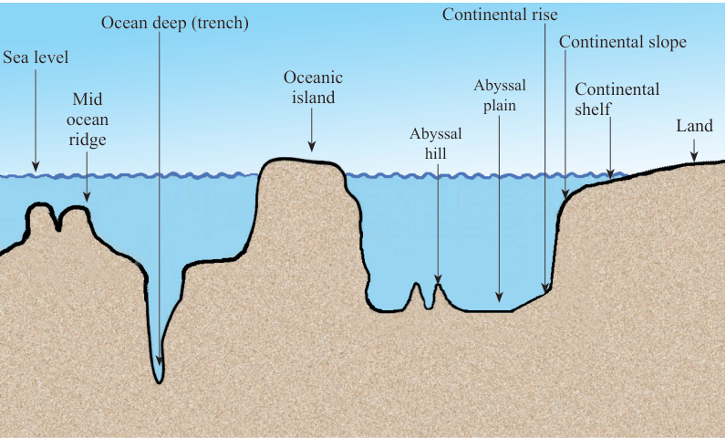

| SN | Ocean | Size (Million Km²) |
|---|---|---|
| 1 | Pacific Ocean | 168.7 |
| 2 | Atlantic Ocean | 85.1 |
| 3 | Indian Ocean | 70.5 |
| 4 | Southern Ocean | 22.0 |
| 5 | Arctic Ocean | 15.6 |
Exercise 4.4
1.
2.
The ocean floor and its features
Ocean floor (sea-bed) refers to a landscape found at the bottom of the ocean. The ocean floor is made up of various features. The major features of the ocean floor include the continental shelf, the continental slope, oceanic ridges, deep sea plain, ocean deep (trench), ocean plain, oceanic island, and submarine plateaus (Figure 4.11).

Figure 4.11: Features of the ocean floor56